🏯 姬路城
The White Castle · 设计：Sheila Santos & Israel Cendrero · Devir Games 出版 · 1–4 人 · 约 80 分钟（官方中文规则书全文转录）
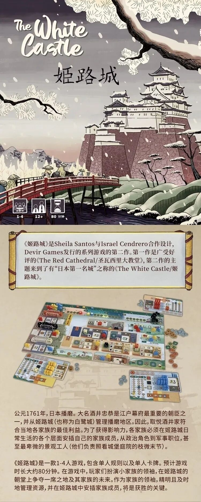
本页整理自微信公众号「宁小方510」《姬路城》中文规则书一文发布的《姬路城》(The White Castle,Sheila Santos 与 Israel Cendrero 合作设计,Devir Games 出版,「圣瓦西里大教堂」《The Red Cathedral》系列第二作) 官方中文规则书扫描件,共 18 张(封面与游戏介绍 + 游戏配件至附录图标总表),逐页全文转录,原书扫描图随文嵌入——点击任意图片即可放大查看。规则内容归 Devir 及版权方所有,转录仅供个人学习查阅。
整理说明:〔图标:……〕表示此处为印刷图标/图形,非文字;〔图 ……〕说明为整理所拟;扫描件模糊或存疑处如实标〔?〕,未作推测补全。组件数量已核对加和——P.2 卡牌 4+6+9+3+15+12+9+5+5+9=77,与「77张 卡牌」横幅一致;P.13 终局计分示例 8+1+3+6+25+18+15=76 与正文自洽。原书括注页码照录:正文与附录中「见第 N 页」为原书页码体系,与扫描件页序不完全对应(如「游戏结束(见第14页)」实际位于扫描第 11 张;扫描第 14–17 张页脚可见印页 16–19,扫描第 18 张页脚页码被裁切,据序约当印页 20)。人名与专名照录原书(如「Nobuaki Takerube」「枝微末节」等),官译腔(地头/使节/大名/家臣/园丁/白鹭指示物等)一并保留。
〔封面:雪中姬路城浮绘风格插画,红桥、白鹭与松雪;标题 The White Castle / 姬路城;角标:1-4 玩家 · 12+ · 80 分钟〕
《姬路城》是Sheila Santos与Israel Cendrero合作设计,Devir Games发行的系列游戏的第二作。第一作是广受好评的《The Red Cathedral/圣瓦西里大教堂》,第二作的主题来到了有"日本第一名城"之称的《The White Castle/姬路城》。
〔图:游戏全景配置照——主版图、个人领地版图、卡牌与配件〕
公元1761年,日本播磨。大名酒井忠恭是江户幕府最重要的朝臣之一,并从姬路城(也称为白鹭城)管理播磨地区。因此,取悦酒井家符合当地各家族的最佳利益。为了获得影响力,各家族必须在姬路城日常生活的各个层面安插自己的家族成员,从政治角色到军事职位,甚至最卑微的景观工人(他们负责照看城堡庭院的枝微末节)。
《姬路城》是一款1-4人游戏,包含单人规则以及单人卡牌。预计游戏时长大约80分钟。在游戏中,玩家们扮演小家族的领袖,在姬路城的朝堂上争夺一席之地及其家族的未来。作为家族的领袖,精明且及时地管理资源,并在姬路城中安插家族成员,将是获胜的关键。
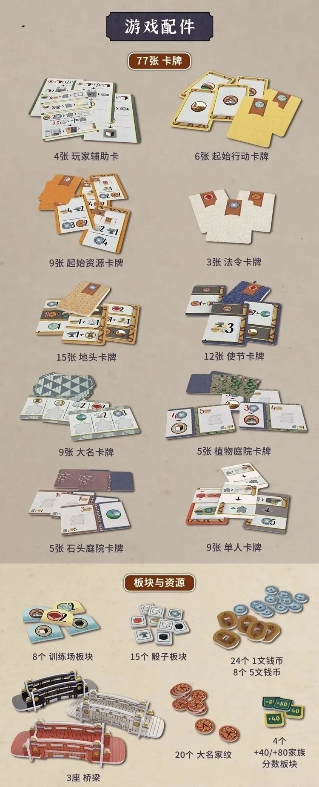
游戏配件
〔横幅章节名:游戏配件〕
77张 卡牌
〔图:玩家辅助卡牌堆叠〕
- 4张 玩家辅助卡
- 6张 起始行动卡牌
- 9张 起始资源卡牌
- 3张 法令卡牌
- 15张 地头卡牌
- 12张 使节卡牌
- 9张 大名卡牌
- 5张 植物庭院卡牌
- 5张 石头庭院卡牌
- 9张 单人卡牌
〔图:起始行动卡牌,黄底庭院图案〕〔图:起始资源卡牌,印有资源与数字组合〕〔图:法令卡牌,米白色,上缘红包角标〕〔图:地头卡牌,米色〕〔图:使节卡牌,深蓝底,印有数字与组合〕〔图:大名卡牌,蓝绿花纹底,印有庭院分格与数字〕〔图:植物庭院卡牌,绿色花纹底,印有数字与庭院分格〕〔图:石头庭院卡牌,紫褐色花纹底〕〔图:单人卡牌,印有行动箭头与数字〕
板块与资源
〔横幅章节名:板块与资源〕
- 8个 训练场板块
- 15个 骰子板块
- 24个 1文钱币
- 8个 5文钱币
- 3座 桥梁
- 20个 大名家纹
- 4个 +40/+80家族分数板块
〔图:训练场板块,水色底印红色圆形〕〔图:骰子板块,白色方形板块〕〔图:1文钱币(蓝色圆币)与5文钱币(棕色椭圆币)〕〔图:三座立体桥梁模型(黑、白、红)〕〔图:大名家纹,红色圆形纹章〕〔图:+40/+80家族分数板块,绿色小板块〕
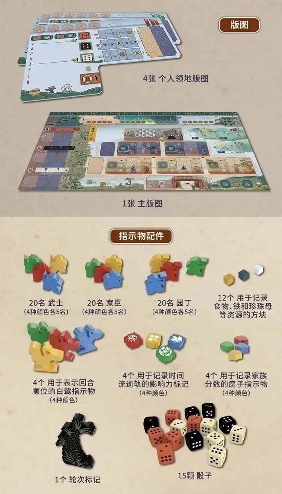
版图
〔横幅章节名:版图〕
〔图:个人领地版图,浅蓝底,印有分数轨(0-7)、骰子格与资源格〕
- 4张 个人领地版图
- 1张 主版图
〔图:主版图,姬路城全景插画,含时间流逝轨、行动区与各式功能格〕
指示物配件
〔横幅章节名:指示物配件〕
- 20名 武士(4种颜色各5名)
- 20名 家臣(4种颜色各5名)
- 20名 园丁(4种颜色各5名)
- 12个 用于记录食物、铁和珍珠母等资源的方块
- 4个 用于表示回合顺位的白鹭指示物(4种颜色)
- 4个 用于记录时间流逝轨的影响力标记(4种颜色)
- 4个 用于记录家族分数的扇子指示物(4种颜色)
- 1个 轮次标记
- 15颗 骰子
〔图:武士/家臣/园丁木质人形,绿、红、黄、蓝四色〕〔图:食物(金)、铁(灰蓝)、珍珠母(白)三种立方块〕〔图:四色白鹭形指示物〕〔图:四色圆柱影响力标记〕〔图:四色扇形分数指示物〕〔图:黑色鲤鱼形轮次标记〕〔图:红、黑、米白三色骰子〕
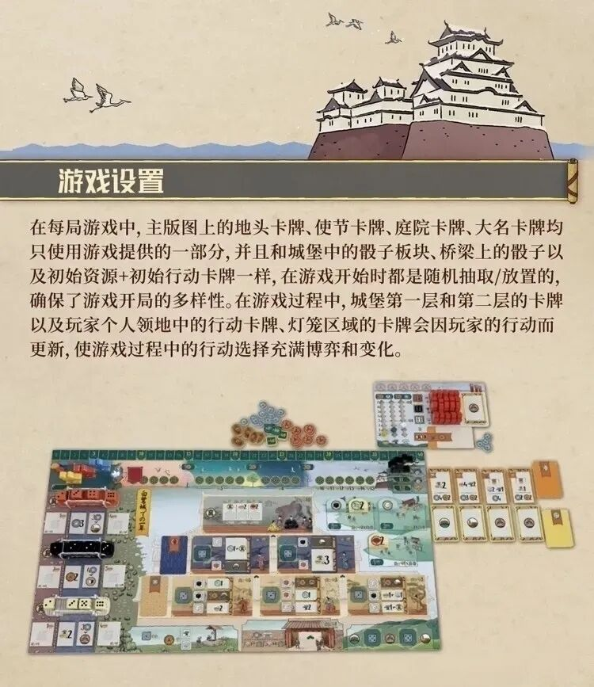
游戏设置
在每局游戏中,主版图上的地头卡牌、使节卡牌、庭院卡牌、大名卡牌均只使用游戏提供的一部分,并且和城堡中的骰子板块、桥梁上的骰子以及初始资源+初始行动卡牌一样,在游戏开始时都是随机抽取/放置的,确保了游戏开局的多样性。在游戏过程中,城堡第一层和第二层的卡牌以及玩家个人领地中的行动卡牌、灯笼区域的卡牌会因玩家的行动而更新,使游戏过程中的行动选择充满博弈和变化。
〔图:设置完成的主版图与个人领地版图全景示例〕
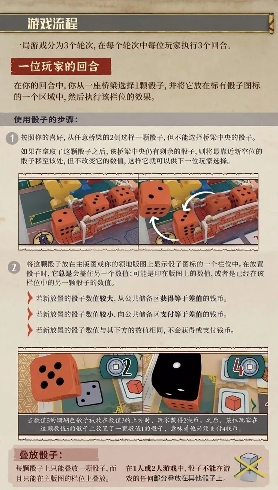
游戏流程
一局游戏分为3个轮次,在每个轮次中每位玩家执行3个回合。
一位玩家的回合
在你的回合中,你从一座桥梁选择1颗骰子,并将它放在标有骰子图标的一个区域中,然后执行该栏位的效果。
使用骰子的步骤:
- 按照你的喜好,从任意桥梁的2侧选择一颗骰子,但不能选择桥梁中央的骰子。
如果在拿取了这颗骰子之后,该桥梁中央仍有剩余的骰子,则将最靠近新空位的骰子移至该处,但不改变它的数值,这样它就可以供下一位玩家选择。
〔图:桥梁上红色骰子移位补位的示意图〕
- 将这颗骰子放在主版图或你的领地版图上显示骰子图标的一个栏位中。在放置骰子时,它总是会盖住另一个数值:可能是印在版图上的数值,或者是在该栏位中的另一颗骰子的数值。
- 若新放置的骰子数值较大,从公共储备区获得等于差值的钱币。
- 若新放置的骰子数值较小,向公共储备区支付等于差值的钱币。
- 若新放置的骰子数值与其下方的数值相同,不会获得或支付钱币。
〔图:骰子盖放数值的两组示例图〕
当数值5的珊瑚色骰子被放在数值3的上方时,玩家获得2钱币。之后,某位玩家在这颗数值5的骰子上放置了一颗数值1的骰子,意味着他必须支付4钱币。
叠放骰子:
每颗骰子上只能叠放一颗骰子,而且只能在主版图的栏位上叠放。
在1人或2人游戏中,骰子不能在游戏的任何部分叠放在其他骰子上。
〔图标:叠放骰子并打叉〕
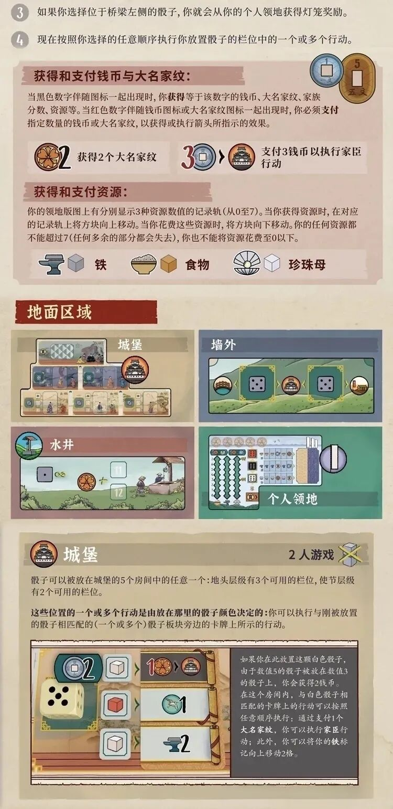
- 如果你选择位于桥梁左侧的骰子,你就会从你的个人领地获得灯笼奖励。
- 现在按照你选择的任意顺序执行你放置骰子的栏位中的一个或多个行动。
获得和支付钱币与大名家纹:
当黑色数字伴随图标一起出现时,你获得等于该数字的钱币、大名家纹、家族分数、资源等。当红色数字伴随钱币图标或大名家纹图标一起出现时,你必须支付指定数量的钱币或大名家纹,以获得或执行箭头所指示的效果。
〔图标示例:花形家纹 2——获得2个大名家纹;3 钱币→城堡——支付3钱币以执行家臣行动〕
获得和支付资源:
你的领地版图上有分别显示3种资源数值的记录轨(从0到7)。当你获得资源时,在对应的记录轨上将方块向上移动。当你花费这些资源时,将方块向下移动。你的任何资源都不能超过7(任何多余的部分都会失去),你也不能将资源花费至0以下。
〔图标:铁——砧形图标;食物——碗形图标;珍珠母——贝壳形图标,各配一枚方块〕
地面区域
〔四宫格插图:城堡 / 墙外 / 水井 / 个人领地〕
城堡
〔角标:2人游戏;叠放骰子打叉图标〕
骰子可以被放在城堡的5个房间中的任意一个:地头层级有3个可用的栏位,使节层级有2个可用的栏位。
这些位置的一个或多个行动是由放在那里的骰子颜色决定的:你可以执行与刚放置的骰子相匹配的(一个或多个)骰子板块旁边的卡牌上所示的行动。
〔图:城堡房间放置示例〕
如果你在此放置这颗白色骰子,由于数值5的骰子被放在数值3的骰子上,你会获得2钱币。在这个房间内,与白色骰子相匹配的卡牌上的行动可以按照任意顺序执行:通过支付1个大名家纹,你可以执行家臣行动;此外,你可以将你的铁标记向上移动2格。
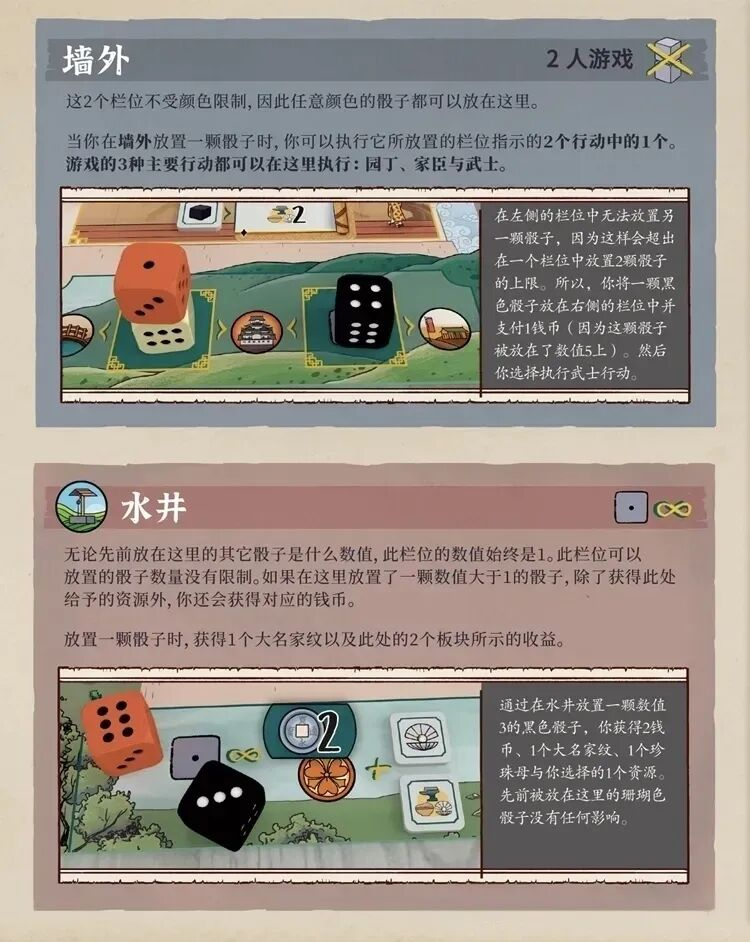
墙外
〔角标:2人游戏;叠放骰子打叉图标〕
这2个栏位不受颜色限制,因此任意颜色的骰子都可以放在这里。
当你在墙外放置一颗骰子时,你可以执行它所放置的栏位指示的2个行动中的1个。游戏的3种主要行动都可以在这里执行:园丁、家臣与武士。
〔图:墙外栏位放置示例〕
在左侧的栏位中无法放置另一颗骰子,因为这样会超出在一个栏位中放置2颗骰子的上限。所以,将一颗黑色骰子放在右侧的栏位中并支付钱币(因为这颗骰子被放在了数值5上)。然后你选择执行武士行动。
水井
〔图标:骰子·1与∞〕
无论先前放在这里的其它骰子是什么数值,此栏位的数值始终是1。此栏位可以放置的骰子数量没有限制。如果在这里放置了一颗数值大于1的骰子,除了获得此处给予的资源外,你还会获得对应的钱币。
放置一颗骰子时,获得1个大名家纹以及此处的2个板块所示的收益。
〔图:水井放置示例〕
通过在水井放置一颗数值3的黑色骰子,你获得2钱币、1个大名家纹、1个珍珠母与你选择的1个资源。先前被放在这里的珊瑚色骰子没有任何影响。
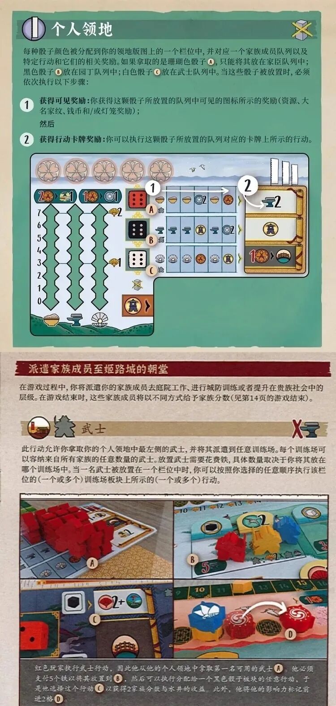
个人领地
〔图标:骰子;角标:叠放骰子打叉〕
每种骰子颜色被分配到你的领地版图上的一个栏位中,并对应一个家族成员队列以及特定行动和它们的相关奖励。如果拿取的是珊瑚色骰子〔图标:A〕,只能将其放在家臣队列中;黑色骰子〔图标:B〕放在园丁队列中;白色骰子〔图标:C〕放在武士队列中。当这些骰子被放置时,必须依次执行以下步骤:
- 获得可见奖励: 你获得这颗骰子所放置的队列中可见的图标所示的奖励(资源、大名家纹、钱币和/或灯笼奖励);然后
- 获得行动卡牌奖励: 你可以执行这颗骰子所放置的队列对应的卡牌上所示的行动。
〔图:个人领地版图大图——上缘为大名家纹奖励格与可见奖励图标行,A(珊瑚)/B(黑)/C(白)三个队列分别印有资源、家臣、武士图标,左侧为资源记录轨与分数轨,右侧为行动卡牌栏,标注步骤 1/2〕
派遣家族成员至姬路城的朝堂
在游戏过程中,你将派遣你的家族成员去庭院工作、进行城防训练或者提升在贵族社会中的层级。在游戏结束时,这些家族成员将以不同方式给予家族分数(见第14页的游戏结束)。
武士
〔图标:武士人形;右上角图标:X与铁砧〕
此行动允许你拿取你的个人领地中最左侧的武士,并将其派遣到任意训练场。每个训练场可以容纳来自所有家族的任意数量的武士。放置武士需要花费铁,具体数量取决于你将其放在哪个训练场中。当一名武士被放置在一个栏位中时,你可以按照你选择的任意顺序执行该栏位的(一个或多个)训练场板块上所示的(一个或多个)行动。
〔图:A/B/C/D 四格示例——A 个人领地中的红色武士;B 训练场;C 黑色骰板块→扇子2+水井;D 时间流逝轨上的影响力标记〕
红色玩家执行武士行动,因此他从他的个人领地中拿取第一名可用的武士〔A〕。他必须支付5个铁以将其放置到〔B〕,然后可以执行分配给一个黑色骰子板块的任意行动,于是他选择这个行动〔C〕以获得2家族分数与水井的收益。此外,他将他的影响力标记前进2格〔D〕。
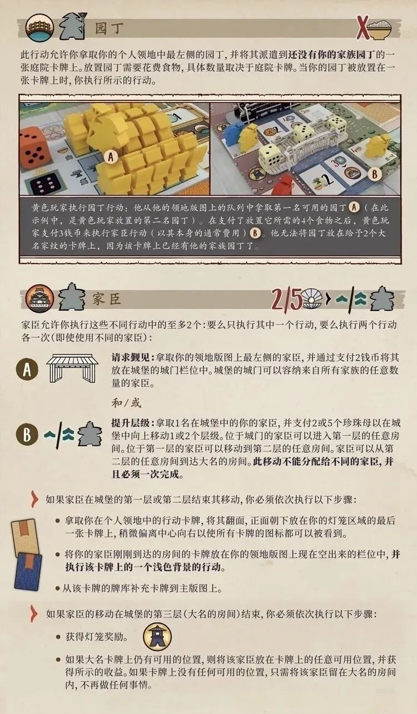
园丁
〔图标:园丁人形;右上角图标:X与食物碗〕
此行动允许你拿取你的个人领地中最左侧的园丁,并将其派遣到还没有你的家族园丁的一张庭院卡牌上。放置园丁需要花费食物,具体数量取决于庭院卡牌。当你的园丁被放置在一张卡牌上时,你执行所示的行动。
〔图:A/B 示例——A 个人领地中的黄色园丁队列;B 桥梁旁的庭院卡牌〕
黄色玩家执行园丁行动:他从他的领地版图上的队列中拿取第一名可用的园丁〔A〕(在此示例中,是黄色玩家放置的第二名园丁)。在支付了放置它所需的4个食物之后,黄色玩家支付3钱币来执行家臣行动(以其本身的通常费用)〔B〕。他无法将园丁放在给予2个大名家纹的卡牌上,因为该卡牌上已经有他的家族园丁了。
家臣
〔图标:城堡与家臣人形;右上角图标:2/5贝壳、〉、⇄/↗与家臣人形〕
家臣允许你执行这些不同行动中的至多2个:要么只执行其中一个行动,要么执行两个行动各一次(即使使用不同的家臣):
〔图标:A——城门〕请求觐见: 拿取你的领地版图上最左侧的家臣,并通过支付2钱币将其放在城堡的城门栏位中。城堡的城门可以容纳来自所有家族的任意数量的家臣。
和/或
〔图标:B——⇄/↗与家臣人形〕提升层级: 拿取1名在城堡中的你的家臣,并支付2或5个珍珠母以在城堡中向上移动1或2个层级。位于城门的家臣可以进入第一层的任意房间。位于第一层的家臣可以移动到第二层的任意房间。家臣可以从第二层的任意房间到达大名的房间。此移动不能分配给不同的家臣,并且必须一次完成。
- 如果家臣在城堡的第一层或第二层结束其移动,你必须依次执行以下步骤:
- 拿取你在个人领地中的行动卡牌,将其翻面,正面朝下放在你的灯笼区域的最后一张卡牌上,稍微偏离中心向右以使所有卡牌的图标都可以被看到。
- 将你的家臣刚刚到达的房间的卡牌放在你的领地版图上现在空出来的栏位中,并执行该卡牌上的一个浅色背景的行动。
- 从该卡牌的牌库补充卡牌到主版图上。
- 如果家臣的移动在城堡的第三层(大名的房间)结束,你必须依次执行以下步骤:
- 获得灯笼奖励。〔图标:灯笼〕
- 如果大名卡牌上仍有可用的位置,则将该家臣放在卡牌上的任意可用位置,并获得所示的收益。如果卡牌上没有任何可用的位置,只需将该家臣留在大名的房间内,不再做任何事情。
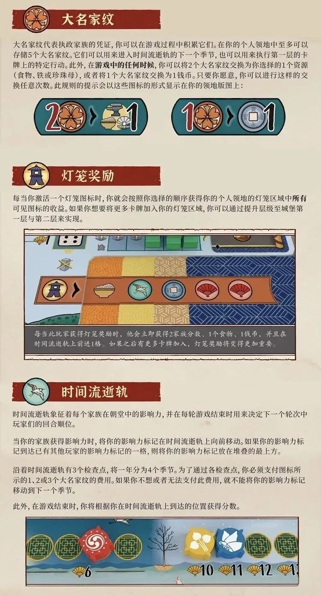
大名家纹
大名家纹代表执政家族的凭证,你可以在游戏过程中积累它们。在你的个人领地中至多可以存储5个大名家纹。它们可以用来进入时间流逝轨的下一个季节,也可以用来执行第一层的卡牌上的特定行动。此外,在游戏中的任何时候,你可以将2个大名家纹交换为你选择的1个资源(食物、铁或珍珠母),或者将1个大名家纹交换为1钱币。只要你愿意,你可以进行这样的交换任意次数。此规则的提示会以这些图标的形式显示在你的领地版图上:
〔图示:2家纹 > 铁/贝壳(任选1资源);1家纹 > 1钱币〕
灯笼奖励
每当你激活一个灯笼图标时,你就会按照你选择的顺序获得你的个人领地的灯笼区域中所有可见图标的收益。如果你想要将更多卡牌加入你的灯笼区域,你可以通过提升层级至城堡第一层与第二层来实现。
〔图:灯笼区域示例〕
每当此玩家获得灯笼奖励时,他会立即获得2家族分数、1个食物、1钱币,并且在时间流逝轨上前进1格。如果之后有更多卡牌加入,灯笼奖励将变得更加重要。
时间流逝轨
时间流逝轨象征着每个家族在朝堂中的影响力,并在每轮游戏结束时用来决定下一个轮次中玩家们的回合顺位。
当你的家族获得影响力时,将你的影响力标记在时间流逝轨上向前移动。如果你的影响力标记到达已有其他玩家的影响力标记的一格,则将你的影响力标记放在堆叠的最上方。
沿着时间流逝轨有3个检查点,将一年分为4个季节。为了通过各检查点,你必须支付图标所示的1、2或3个大名家纹的费用。如果不想或者无法支付此费用,就不能将你的影响力标记移动到下一个季节。
此外,在游戏结束时,你将根据你在时间流逝轨上到达的位置获得分数。
〔图:时间流逝轨局部——家纹检查点与扇子分数格(6、10、11、12、13)〕
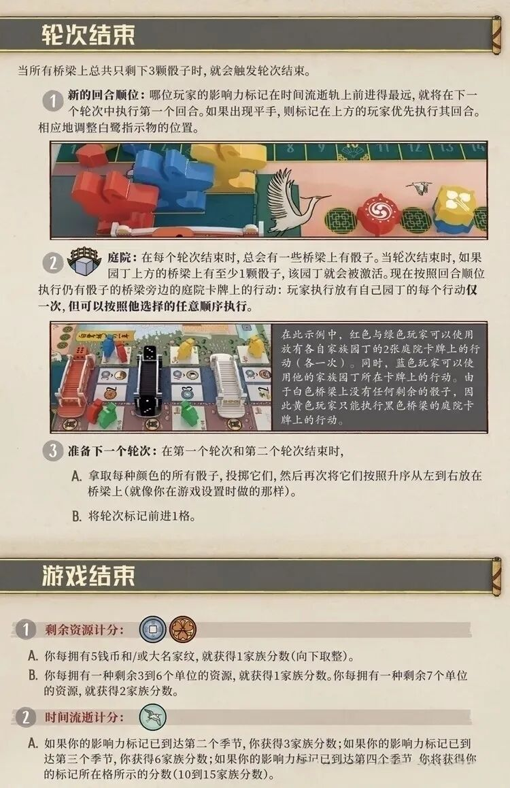
轮次结束
当所有桥梁上总共只剩下3颗骰子时,就会触发轮次结束。
- 新的回合顺位: 哪位玩家的影响力标记在时间流逝轨上前进得最远,就将在下一个轮次中执行第一个回合。如果出现平手,则标记在上方的玩家优先执行其回合。相应地调整白鹭指示物的位置。
〔图:时间流逝轨、家纹检查点与白鹭指示物〕
- 〔图标:庭院〕庭院: 在每个轮次结束时,总会有一些桥梁上有骰子。当轮次结束时,如果园丁上方的桥梁上有至少1颗骰子,该园丁就会被激活。现在按照回合顺位执行仍有骰子的桥梁旁边的庭院卡牌上的行动:玩家执行放有自己园丁的每个行动仅一次,但可以按照他选择的任意顺序执行。
〔图:庭院卡牌激活示例〕
在此示例中,红色与绿色玩家可以使用放有各自家族园丁的2张庭院卡牌上的行动(各一次)。同时,蓝色玩家可以使用他的家族园丁所在卡牌上的行动,由于白色桥梁上没有任何剩余的骰子,因此蓝色玩家只能执行黑色桥梁的庭院卡牌上的行动。
- 准备下一个轮次: 在第一个轮次和第二个轮次结束时,
A. 拿取每种颜色的所有骰子,投掷它们,然后再次将它们按照升序从左到右放在桥梁上(就像你在游戏设置时做的那样)。
B. 将轮次标记前进1格。
游戏结束
- 剩余资源计分: 〔图标:钱币与大名家纹〕
A. 你每拥有5钱币和/或大名家纹,就获得1家族分数(向下取整)。
B. 你每拥有一种剩余3到6个单位的资源,就获得1家族分数。你每拥有一种剩余7个单位的资源,就获得2家族分数。
- 时间流逝计分: 〔图标:飞鸟〕
A. 如果你的影响力标记已到达第二个季节,你获得3家族分数;如果你的影响力标记已到达第三个季节,你获得6家族分数;如果你的影响力标记已到达第四个季节,你将获得你的标记所在格所示的分数(10到15家族分数)。
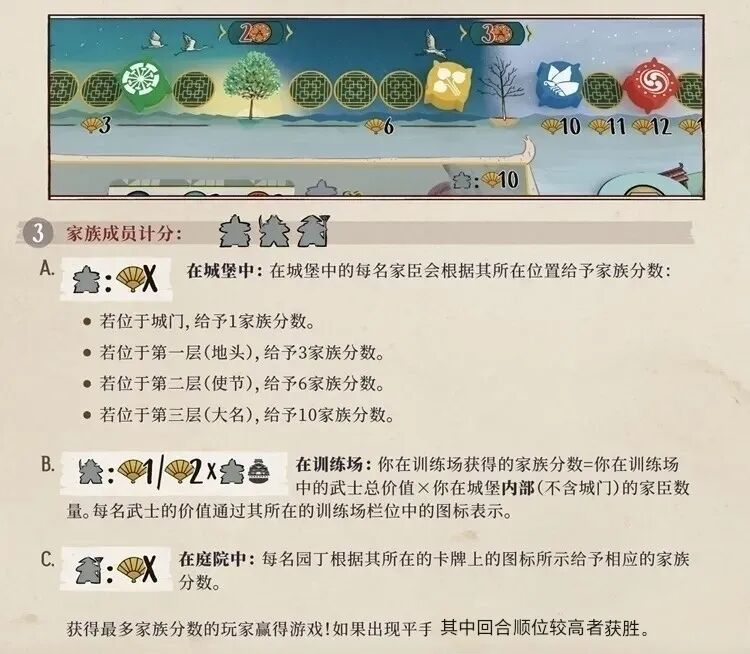
〔图:主版图局部——时间流逝轨后段:检查点(2家纹、3家纹)、分数格 3/6/10/11/12,以及右下角板印图例「大名房间图标:扇10」(对应第三层·大名计分)〕
- 家族成员计分: 〔图标:武士、家臣、园丁人形〕
A. 〔图标:家臣:扇X〕在城堡中: 在城堡中的每名家臣会根据其所在位置给予家族分数:
- 若位于城门,给予1家族分数。
- 若位于第一层(地头),给予3家族分数。
- 若位于第二层(使节),给予6家族分数。
- 若位于第三层(大名),给予10家族分数。
B. 〔图标:武士:扇1/扇2×武士·家臣〕在训练场: 你在训练场获得的家族分数=你在训练场中的武士总价值×你在城堡内部(不含城门)的家臣数量。每名武士的价值通过其所在的训练场栏位中的图标表示。
C. 〔图标:园丁:扇X〕在庭院中: 每名园丁根据其所在的卡牌上的图标所示给予相应的家族分数。
获得最多家族分数的玩家赢得游戏!如果出现平手,其中回合顺位较高者获胜。
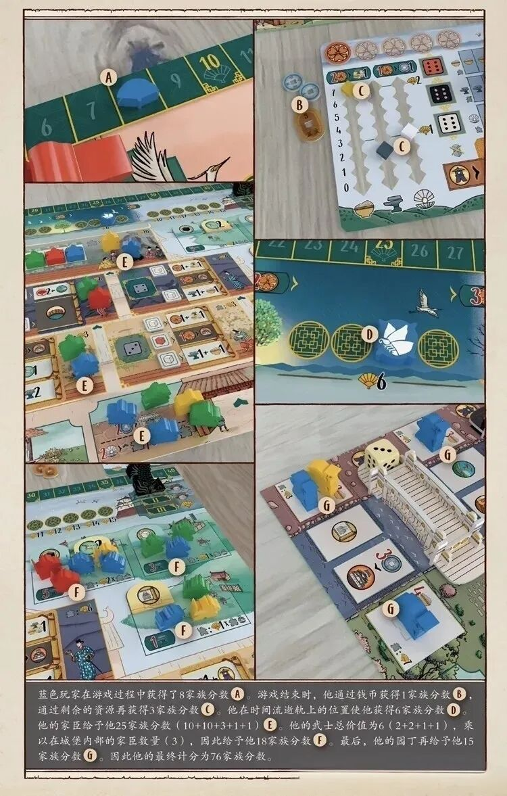
〔整页为终局计分示例图,共 7 处标注:A 时间流逝轨上的分数扇;B 个人领地钱币/家纹;C 资源记录轨;D 时间流逝轨季节格;E 城堡中的家臣;F 训练场中的武士;G 庭院中的园丁〕
蓝色玩家在游戏过程中获得了8家族分数〔A〕。游戏结束时,他通过钱币获得1家族分数〔B〕,通过剩余的资源再获得3家族分数〔C〕。他在时间流逝轨上的位置使他获得6家族分数〔D〕。他的家臣给予他25家族分数(10+10+3+1+1)〔E〕。他的武士总价值为6(2+2+1+1),乘以在城堡内部的家臣数量(3),因此给予他18家族分数〔F〕。最后,他的园丁再给予他15家族分数〔G〕。因此他的最终计分为76家族分数。
〔图注核对:8+1+3+6+25+18+15=76,加和自洽〕
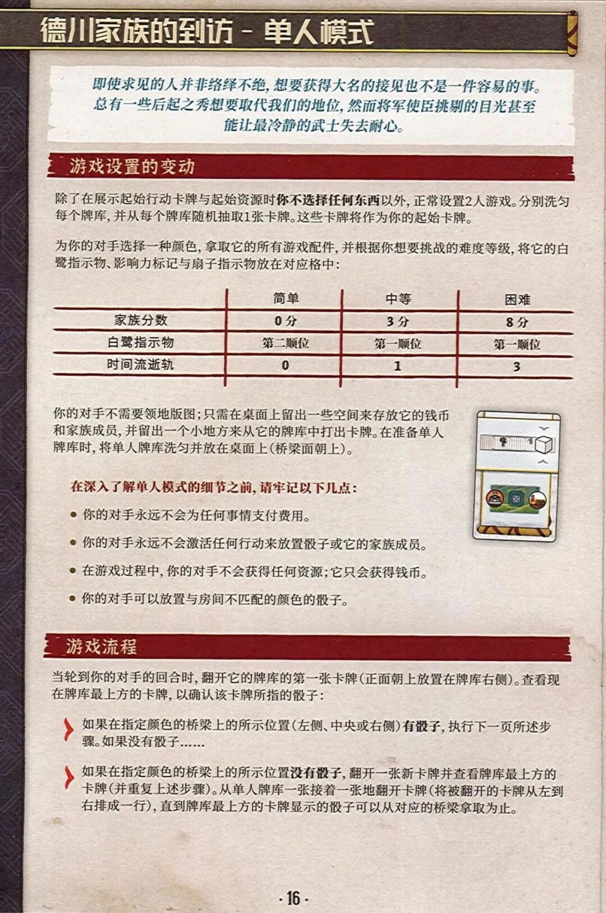
德川家族的到访 – 单人模式
即使求见的人并非络绎不绝,想要获得大名的接见也不是一件容易的事。总有一些后起之秀想要取代我们的地位,然而将军使臣挑剔的目光甚至能让最冷静的武士失去耐心。
游戏设置的变动
除了在展示起始行动卡牌与起始资源时你不选择任何东西以外,正常设置2人游戏。分别洗匀每个牌库,并从每个牌库随机抽取1张卡牌。这些卡牌将作为你的起始卡牌。
为你的对手选择一种颜色,拿取它的所有游戏配件,并根据你想要挑战的难度等级,将它的白鹭指示物、影响力标记与扇子指示物放在对应格中:
| 简单 | 中等 | 困难 | |
|---|---|---|---|
| 家族分数 | 0 分 | 3 分 | 8 分 |
| 白鹭指示物 | 第二顺位 | 第一顺位 | 第一顺位 |
| 时间流逝轨 | 0 | 1 | 3 |
你的对手不需要领地版图;只需在桌面上留出一些空间来存放它的钱币和家族成员,并留出一个小地方来从它的牌库中打出卡牌。在准备单人牌库时,将单人牌库洗匀并放在桌面上(桥梁面朝上)。
〔图:单人卡牌正反面示例〕
在深入了解单人模式的细节之前,请牢记以下几点:
- 你的对手永远不会为任何事情支付费用。
- 你的对手永远不会激活任何行动来放置骰子或它的家族成员。
- 在游戏过程中,你的对手不会获得任何资源;它只会获得钱币。
- 你的对手可以放置与房间不匹配的颜色的骰子。
游戏流程
当轮到你的对手的回合时,翻开它的牌库的第一张卡牌(正面朝上放置在牌库右侧)。查看现在牌库最上方的卡牌,以确认该卡牌所指的骰子:
- 如果在指定颜色的桥梁上的所示位置(左侧、中央或右侧)有骰子,执行下一页所述步骤。如果没有骰子……
- 如果在指定颜色的桥梁上的所示位置没有骰子,翻开一张新卡牌并查看牌库最上方的卡牌(并重复上述步骤)。从单人牌库一张接着一张地翻开卡牌(将被翻开的卡牌从左到右排成一行),直到牌库最上方的卡牌显示的骰子可以从对应的桥梁拿取为止。
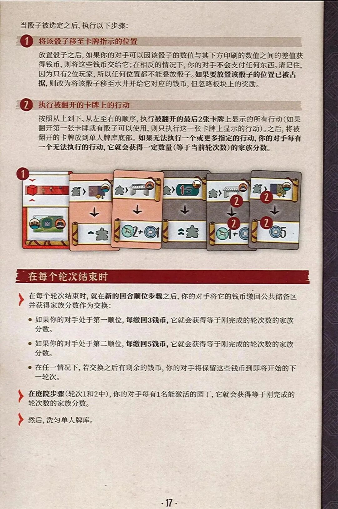
当骰子被选定之后,执行以下步骤:
- 将该骰子移至卡牌指示的位置
放置骰子之后,如果你的对手可以因该骰子的数值与其下方印刷的数值之间的差值获得钱币,则将这些钱币交给它;在相反的情况下,你的对手不会支付任何东西。请记住,因为只有2位玩家,所以任何位置都不能叠放骰子。如果要放置该骰子的位置已被占据,则改为将该骰子移至水井并给它对应的钱币,但忽略板块上的奖励。
- 执行被翻开的卡牌上的行动
按照从上到下、从左至右的顺序,执行被翻开的最后2张卡牌上显示的所有行动(如果翻开第一张卡牌就有骰子可以使用,则只执行这一张卡牌上显示的行动)。之后,将被翻开的卡牌放到单人牌库底部。如果无法执行一个或更多指定的行动,你的对手每有一个无法执行的行动,它就会获得一定数量(等于当前轮次数)的家族分数。
〔图:单人卡牌翻开示例——首张为骰子位置卡(标1),其后各卡印有「家臣人形>图标」式行动(标2)〕
在每个轮次结束时
- 在每个轮次结束时,就在新的回合顺位步骤之后,你的对手将它的钱币缴回公共储备区并获得家族分数作为交换:
- 如果你的对手处于第一顺位,每缴回3钱币,它就会获得等于刚完成的轮次数的家族分数。
- 如果你的对手处于第二顺位,每缴回5钱币,它就会获得等于刚完成的轮次数的家族分数。
- 在任一情况下,若交换之后有剩余的钱币,你的对手将保留这些钱币到即将开始的下一轮次。
- 在庭院步骤(轮次1和2中),你的对手每有1名能激活的园丁,它就会获得等于刚完成的轮次数的家族分数。
- 然后,洗匀单人牌库。
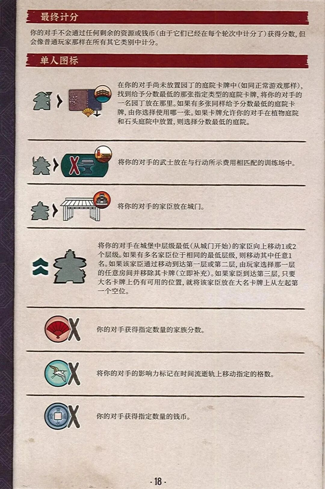
最终计分
你的对手不会通过任何剩余的资源或钱币(由于它们已经在每个轮次中计分了)获得分数,但会像普通玩家那样在所有其它类别中计分。
单人图标
〔图标:园丁人形>庭院卡与扇子〕
在你的对手尚未放置园丁的庭院卡牌中(如同正常游戏那样),找到给予分数最低的那张指定类型的庭院卡牌,将你的对手的一名园丁放在那里。如果有多张同样给予分数最低的庭院卡牌,由你选择使用哪一张。如果卡牌允许你的对手在植物庭院和石头庭院中放置,则选择分数最低的庭院。
〔图标:武士人形>X与铁砧〕
将你的对手的武士放在与行动所示费用相匹配的训练场中。
〔图标:家臣人形>城门〕
将你的对手的家臣放在城门。
〔图标:上移箭头与家臣人形〕
将你的对手在城堡中层级最低(从城门开始)的家臣向上移动1或2个层级。如果有多名家臣位于相同的最低层级,则移动其中任意1名。如果该家臣通过移动到达第一层或第二层,由玩家选择那一层的任意房间并移除其卡牌(立即补充)。如果家臣到达第三层,只要大名卡牌上仍有可用的位置,就将该家臣放在大名卡牌上从左起第一个空位。
〔图标:红扇X〕
你的对手获得指定数量的家族分数。
〔图标:白鹭X〕
将你的对手的影响力标记在时间流逝轨上移动指定的格数。
〔图标:钱币X〕
你的对手获得指定数量的钱币。
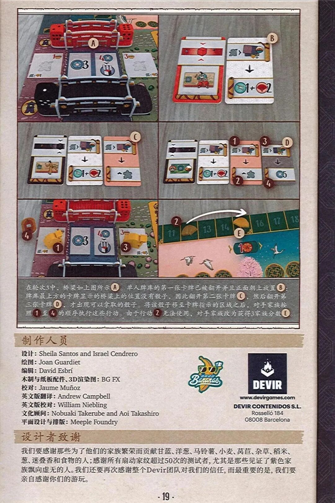
〔图:单人模式示例图组——A 红色桥梁;B 翻开的第一张卡牌;C 翻开的第二张卡牌;D 翻开的第三、四张卡牌(行动标 1/2/3/4);E 时间流逝轨旁的 3 家族分数〕
在轮次3中,桥梁如上图所示〔A〕。单人牌库的第一张卡牌已被翻开并且正面朝上放置〔B〕。牌库最上方的卡牌显示的桥梁上的位置没有骰子,因此翻开第二张卡牌〔C〕,然后翻开第三张卡牌〔D〕,才出现可以拿取的骰子。将该骰子移至卡牌指示的区域之后,对手家族按照〔1〕至〔4〕的顺序执行这些行动。由于行动〔2〕无法使用,对手家族改为获得3家族分数〔E〕。
制作人员
- 设计: Sheila Santos and Israel Cendrero
- 绘图: Joan Guardiet
- 编辑: David Esbrí
- 木制与纸板配件、3D渲染图: BG FX
- 校对: Jaume Muñoz
- 英文版翻译: Andrew Campbell
- 英文版校对: William Niebling
- 文化顾问: Nobuaki Takerube and Aoi Takashiro
- 平面设计与排版: Meeple Foundry
〔图:Bananas 徽标与 DEVIR 徽标——www.devirgames.com · DEVIR CONTENIDOS S.L. · Rosselló 184 · 08008 Barcelona〕
设计者致谢
我们要感谢那些为了他们的家族繁荣而贡献甘蓝、洋葱、马铃薯、小麦、莴苣、杂草、稻米、葱、迷迭香和食物的人;感谢所有扇动家纹超过50次的测试者,尤其是那些见证了紫色家族飘向虚无的人。我们还要再次感谢整个Devir团队对我们的信任,而最重要的是,我们要亲自感谢你们的游玩。
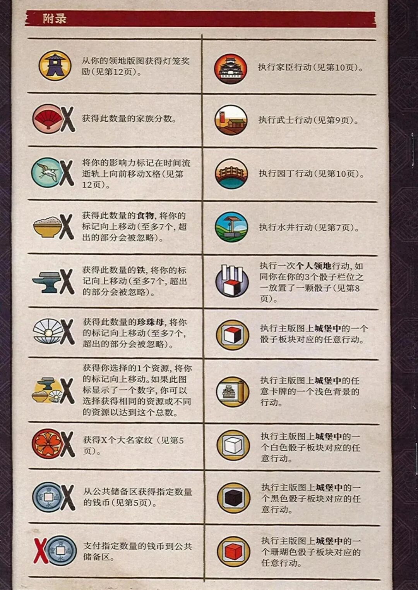
附录
〔图标总表,两栏。左栏:〕
- 〔灯笼图标〕 从你的领地版图获得灯笼奖励(见第12页)。
- 〔红扇X〕 获得此数量的家族分数。
- 〔白鹭X〕 将你的影响力标记在时间流逝轨上向前移动X格(见第12页)。
- 〔食物碗X〕 获得此数量的食物,将你的标记向上移动(至多7个,超出的部分会被忽略)。
- 〔铁砧X〕 获得此数量的铁,将你的标记向上移动(至多7个,超出的部分会被忽略)。
- 〔贝壳X〕 获得此数量的珍珠母,将你的标记向上移动(至多7个,超出的部分会被忽略)。
- 〔砧·碗·贝壳组合X〕 获得你选择的1个资源,将你的标记向上移动。如果此图标显示了一个数字,你可以选择获得相同的资源或不同的资源以达到这个总数。
- 〔红花X〕 获得X个大名家纹(见第5页)。
- 〔钱币X〕 从公共储备区获得指定数量的钱币(见第5页)。
- 〔X钱币〕 支付指定数量的钱币到公共储备区。
右栏:
- 〔城堡图标〕 执行家臣行动(见第10页)。
- 〔训练场图标〕 执行武士行动(见第9页)。
- 〔拱桥图标〕 执行园丁行动(见第10页)。
- 〔水井图标〕 执行水井行动(见第7页)。
- 〔骰子与个人领地图标〕 执行一次个人领地行动,如同你在你的3个骰子栏位之一放置了一颗骰子(见第8页)。
- 〔骰子板块图标〕 执行主版图上城堡中的一个骰子板块对应的任意行动。
- 〔卡牌图标〕 执行主版图上城堡中的任意卡牌的一个浅色背景的行动。
- 〔白色骰子板块图标〕 执行主版图上城堡中的一个白色骰子板块对应的任意行动。
- 〔黑色骰子板块图标〕 执行主版图上城堡中的一个黑色骰子板块对应的任意行动。
- 〔珊瑚色骰子板块图标〕 执行主版图上城堡中的一个珊瑚色骰子板块对应的任意行动。